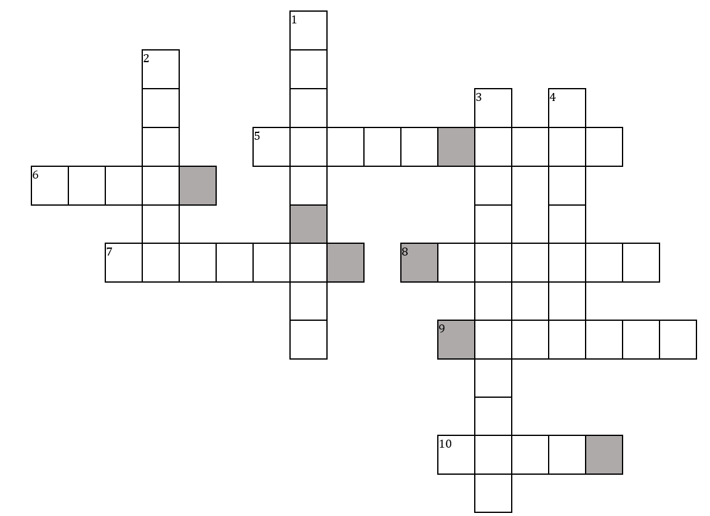

Audio Puzzle
Once you fill in the boxes, take the letters in the grey boxes and form two words which you can attach to your face. Ask us for these articles, and snap a picture and show it to us!
Across
- (5) Weapon used in this famous fictional fight (audio link)
- (6) A failed semaphore, or how the birds travel? (audio link)
- (7) Indian musical instrument (audio link)
- (8) Classic theme song for what? (audio link)
- (9) Identify the animals at play (audio link)
- (10) Who's 'revenge' ad is this in the 90s? (audio link)
Down
- (1) Where we might find this rare species, in India(video link)
- (2) Name the movie where this cult scene occurs (audio link)
- (3) Identify the show behind this classic sound (audio link)
- (4) What bird makes this sound?(audio link)
